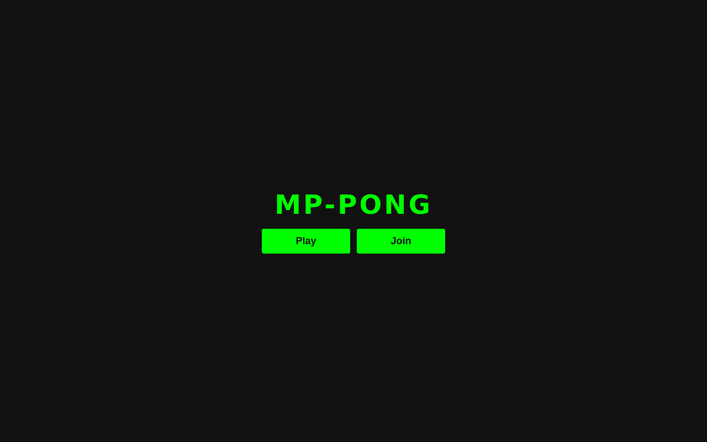
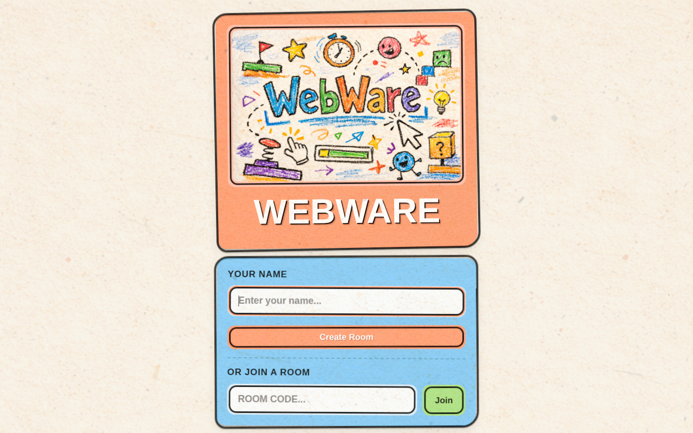
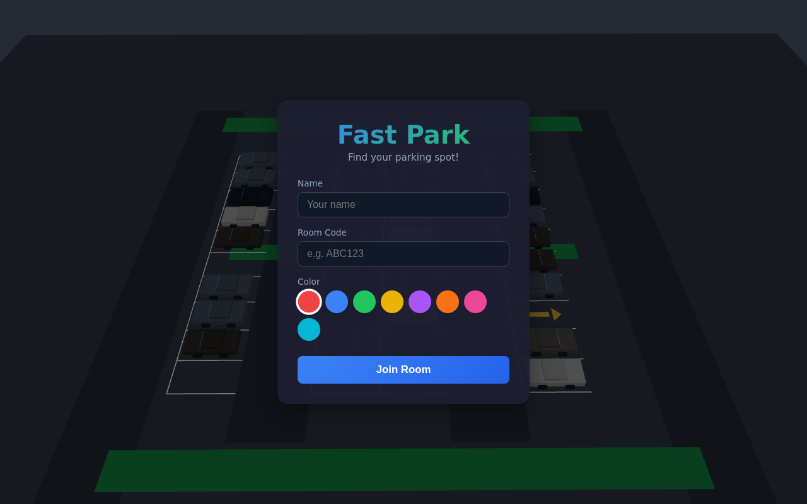
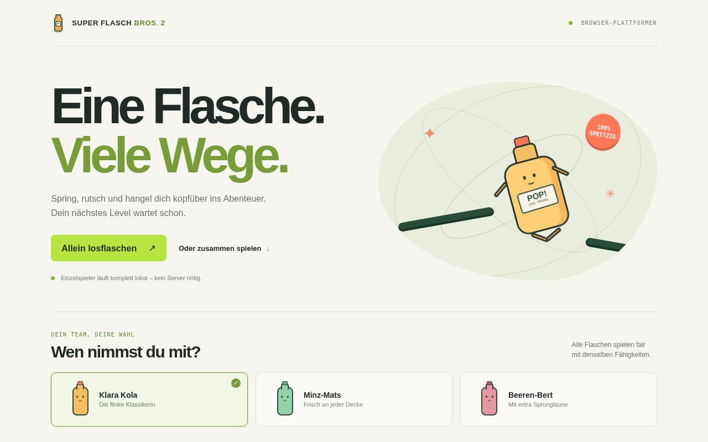
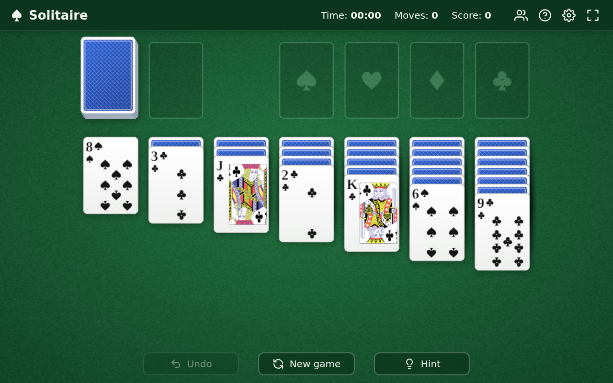

KARTE 001 // MULTIPLAYER

MP-PONG
Multiplayer-Pong im Browser: Zwei oder mehr Spieler treten in einer Polygon-Arena gegeneinander an.
Willkommen auf stiffi.dev. Hier landen Projekte, Experimente und kleine digitale Abenteuer. Wähle ein Spiel und starte direkt im Browser.
Öffne den Quellcode oder starte die spielbare Version direkt.

Multiplayer-Pong im Browser: Zwei oder mehr Spieler treten in einer Polygon-Arena gegeneinander an.

Ein schnelles Multiplayer-Browserspiel mit chaotischen Minispielen rund um typische Internet-Aufgaben.

Ein Multiplayer-Parkspiel: Wer findet und erreicht am schnellsten einen der knappen freien Parkplätze?

Ein Browser-Plattformer mit einer Flasche, die springt, rutscht und sich an Wänden und Decken festhält – allein oder mit Freunden.

Klondike Solitaire in 3D direkt im Browser – allein oder gemeinsam mit Freunden im kooperativen Multiplayer.